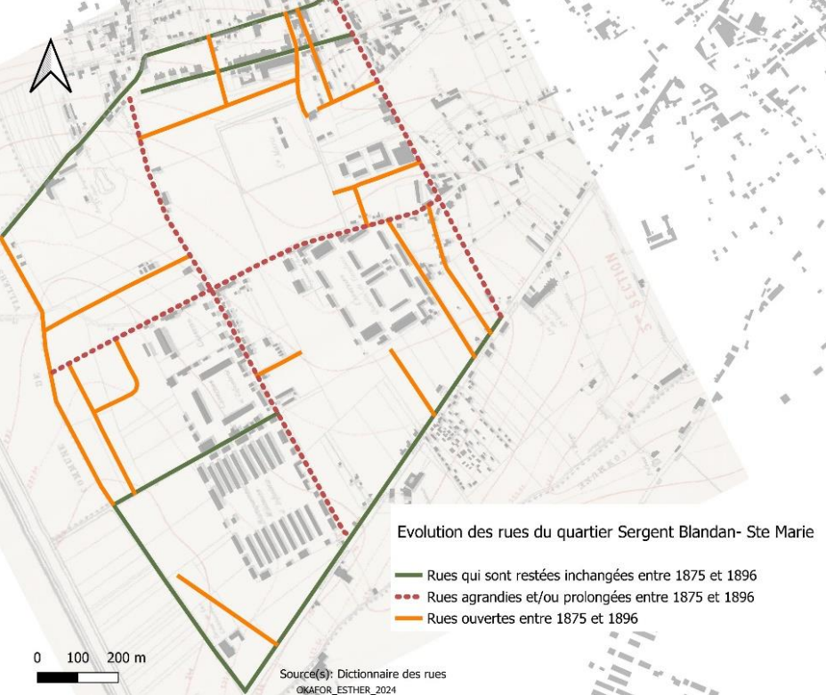
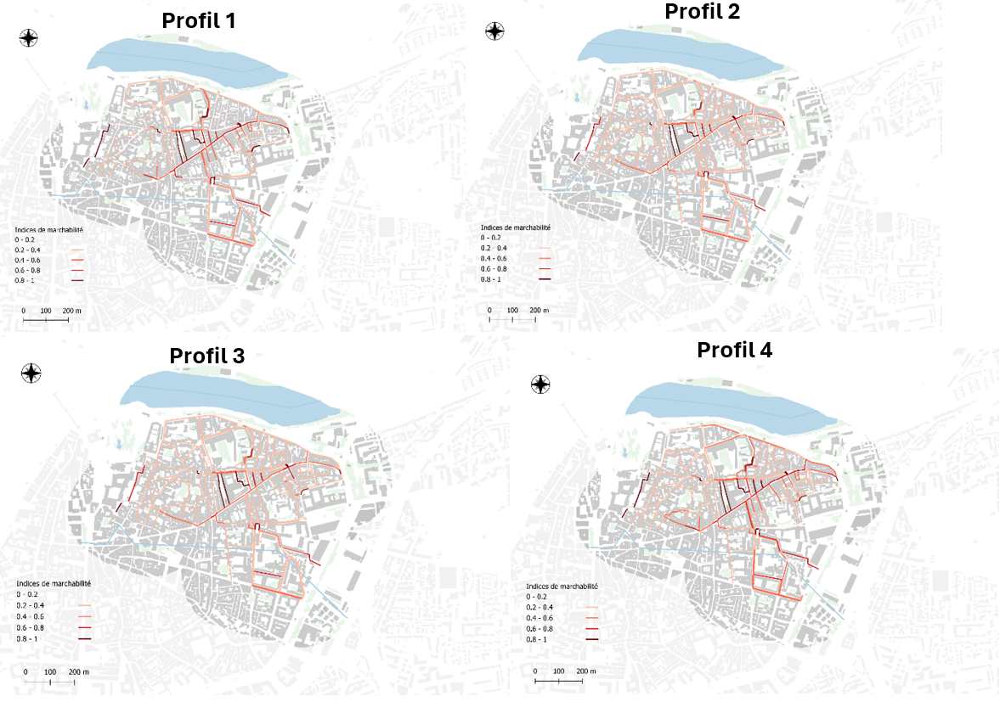

Licence Géographie et Aménagement du Territoire
A l’Université de Lorraine, j’ai obtenu cette licence riche et multidisciplinaire où j’ai pu amasser des connaissances transverses. Par conséquent, je connais bien les sujets liés à :
C'est également à cette occasion que j'ai approfondi mes connaissances en analyse spatiale et que j'ai découvert ma fascination pour les SIG.
Projet Tutoré
Un point fort durant ma licence a été un projet tutoré réalisé en groupe dans ma troisième année. Ça portait sur l’étude de l’évolution d’un quartier militaire à Nancy. Avec mes coéquipiers, nous avons mobilisé tant nos compétences en analyse spatiale que notre curiosité.
Pour ma part, je me suis plongée dans la cartographie du quartier à différentes périodes grâce au géoréférencement des cartes issues des archives.

Master Géomatique et Conduite de Projets Territoriaux
A l’Université d’Avignon, je me suis lancée dans des études plus poussées sur l’application des SIG à diverses thématiques. J’y ai d’ailleurs beaucoup appris sur :
Ce master a été aussi l’occasion de faire un nombre d’ateliers de professionnalisation. C’étaient des projets de groupe, composé de toute la promotion, faites en collaboration avec différentes structures.
Mémoire de Master 1
Le point fort de mon master était mon mémoire, un projet personnel avec lequel j’ai développé une certaine autonomie. A travers mes recherches, j’ai appris et implémenté l’analyse multicritère mais aussi des méthodes d’étude de terrain.
